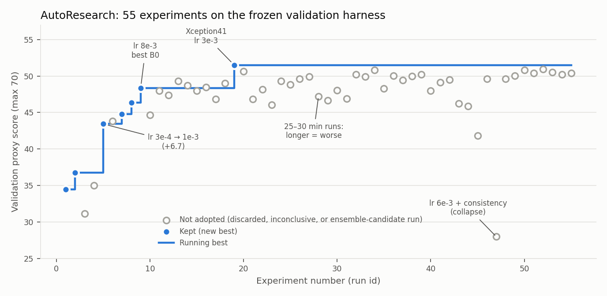
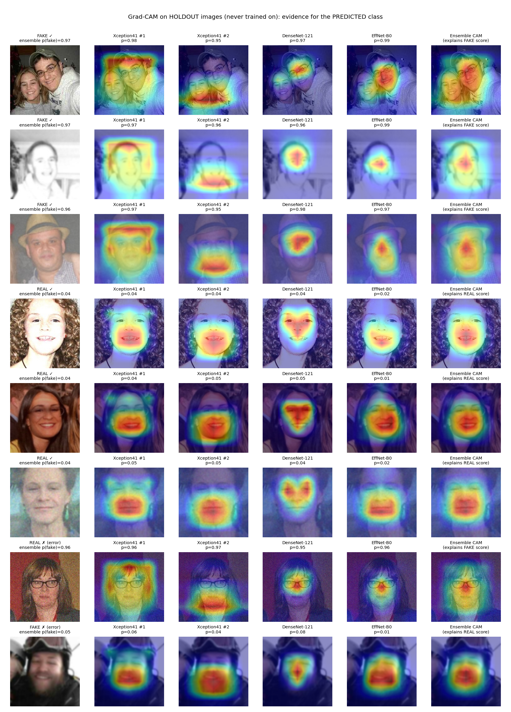
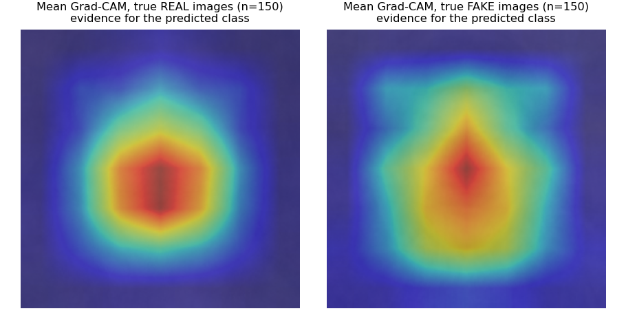

Deepfake ML Hackathon (Synergy '26), IIIT Bangalore
Team members: Dhruv Reddy Sambavaram, Sowmya Gupta · Date: 14 November 2026
Code: deepfake-autoresearch/ (source zip / GitHub link in the submission folder)
We built a deepfake detector for 224×224 aligned face images. It is optimized for what this competition rewards: AUC-ROC on a test set that, by the README, "is designed to test generalization across different deepfake generation methods", plus 20 points of robustness across undisclosed image variants.
Rather than hand-tuning one model, we:
| Final submission (holdout: 589 images never used for any decision) | Value |
|---|---|
| AUC-ROC (clean) | 0.908 |
| AUC on held-out image clusters / on random images | 0.893 / 0.919 |
| Mean AUC under 7 corruptions never seen in training | 0.899 |
| Accuracy / F1 at the submitted threshold (0.660) | 85.9% / 0.853 |
| Inference, 3,000 test images, NVIDIA T4 (Colab) | 65.6 s, 5.1 GB peak GPU memory |
| Reproducibility (T4 vs our machine) | 0 label flips, max confidence difference 0.002 |
The task is binary classification, real (0) vs fake (1), scored by AUC-ROC on 3,000 private test images. Four properties of the problem shaped every decision:
Why an automated research loop. With a frozen, trustworthy harness, many small controlled experiments beat a few
large guesses. Following Karpathy's AutoResearch, an agent edits a single file (train.py), trains for a fixed
6-minute budget (so models are compared at equal compute), is scored by the frozen harness, and keeps or reverts the
change in git. A paired bootstrap decides "keep", which guards against lucky noise. Every attempt is logged in
results.tsv and notes.md, which is the evidence base for Section 6.
| Property | Finding | Consequence |
|---|---|---|
| Size / balance | 3,478 real, 3,522 fake (49.7 / 50.3%); test 3,000 | No class weighting needed |
| Encoding | Every image is 224×224 RGB JPEG with an identical quantization table and identical metadata | No file-level shortcut; the model must learn image content |
| Organizer degradations | Both classes contain gray/black/white occlusion boxes, speckle noise, pixelation, grayscale, colour casts, low contrast, blur | "Degraded" ≠ "fake"; the hidden variants probably look like these |
| Near-duplicates | 356 links (perceptual hash), incl. real/fake pairs made from the same source photo | A random split leaks (Section 3) |
| Global sharpness | Laplacian variance (all 7,000 images): real mean 864 / median 176, fake mean 856 / median 147. Sharpness alone gives AUC 0.48 | No global-sharpness shortcut; the model must use local facial content |
| File size | Test files are smaller on average (12.4 KB vs 13.9 KB train) | Possible distribution shift, consistent with "different generation methods" |
Test images were used only to generate predictions. They were never trained on, never used for selection, and never viewed. Agent permissions also block reading the test folder.
prepare.py)| Split | Images | iid | ood (held-out clusters) | Role |
|---|---|---|---|---|
| train | 4,932 | 4,932 | 0 | training in the research loop |
| val | 1,479 | 561 | 918 | every experiment decision |
| holdout | 589 | 280 | 309 | final confirmation only (2 of 3 allowed uses spent) |
Why not a plain random split? We measured it: in a standard StratifiedKFold(5) split, 8.4% of the validation fold's images have a near-duplicate in the training folds. For reference, our Xception recipe scores 0.915 AUC on such a fold versus 0.893 on our random-but-grouped val and 0.848 on our held-out clusters, so a random split overstates generalization.
The held-out clusters stand in for unseen generators (the data carries no generator labels). This idea is borrowed from the DeepFakeDefenders 2024 cluster-based hard splits.
common.py)Each val image is scored in 19 versions. All corruptions are deterministic (a fixed seed per image).
| Seen (11): may be used as augmentation | Unseen (7): forbidden in training |
|---|---|
| JPEG q50, q30 · Gaussian blur r1, r2 · Gaussian noise σ 2%, 5% · down-up ×0.5 · brightness ×1.25 / contrast ×0.75 · occlusion box (15–25%, gray/black/white) · pixelate ×0.25 · grayscale | WebP q30 · motion blur 9 px · gamma 1.5 · posterize 4-bit · center-crop 85% + zoom · median 3×3 · "re-share" (downscale 75% → JPEG 60 → upscale) |
evaluate.py)auc_main = ½·AUC(iid) + ½·AUC(ood)
auc_rob = 0.4·mean AUC(seen) + 0.6·mean AUC(unseen)
proxy = 50·(2·auc_main − 1) + 20·(2·auc_rob − 1) # max 70 = 50 AUC + 20 robustness pts
train.py. 224×224 RGB face (ImageNet-normalized) + its horizontal mirror
│
┌──────────────┬──────────────┼──────────────┬
▼ ▼ ▼ ▼
Xception41 #1 Xception41 #2 DenseNet-121 EfficientNet-B0
(24.9 M) (24.9 M) (7.0 M) (4.0 M)
each: timm ImageNet-1k backbone → global-avg-pool → dropout 0.2 → linear → 1 logit
│ │ │ │
sigmoid, mean over {image, mirror} for each model
└──────────────┴──────┬───────┴──────────────┘
▼
mean of 4 probabilities = confidence = P(fake)
▼
label = confidence ≥ 0.660 (Youden's J on validation)
| Member | timm weights | Why it's in |
|---|---|---|
| Xception41 ×2 seeds | xception41.tf_in1k |
Best single model (proxy 51.5, best held-out-cluster AUC among single CNNs); two seeds reduce seed variance |
| DenseNet-121 | densenet121.ra_in1k |
Best ensemble partner: highest holdout ood AUC of any single model (0.889) and best worst-case robustness |
| EfficientNet-B0 | efficientnet_b0.ra_in1k |
Fast, and trained with degradation augmentation, so it adds different errors |
The architecture is diverse (depthwise-separable, densely connected, and compound-scaled CNNs), the ensemble is a plain probability average, and the total size is 245 MB. All weights are ImageNet-pretrained, as the rules permit; no deepfake-pretrained weights or external data were used.
| Item | Setting |
|---|---|
| Data loading | Raw JPEG bytes held in RAM; decoded per batch; 6 loader workers |
| Augmentation (all members) | Random horizontal flip (p = 0.5); RandomResizedCrop scale 0.85–1.0, aspect 0.95–1.05 (every view) |
| Extra augmentation (B0 only) | Degrade aug, p = 0.4: one of Gaussian blur (r 0.5–2), Gaussian noise (σ 1–5%), down-up-scale (0.4–0.9, bilinear), pixelate (0.2–0.5, nearest). Seen types only |
| Loss | Binary cross-entropy on a single logit |
| Optimizer | AdamW, weight decay 0.05, batch 64 |
| Learning rate | Xception / DenseNet 3e-3, B0 8e-3; 0.5-epoch linear warmup, cosine decay to 0 |
| Training length | Loop: fixed 6-min wall clock. Final retrain: fixed epochs (Xception 4, DenseNet 5, B0 8), matching the validated runs |
| Final data | train + val (6,411 images); holdout never trained on |
| Hardware | Apple M4 Pro (MPS, fp32). Inference verified on an NVIDIA T4 (CUDA, fp16 autocast) |
On that machine, the channels-last memory layout made MPS training 2.4× slower, and bf16 gave no speed-up, so we trained in fp32 with the default layout.
Augmentation volume. Augmentation is applied on the fly, with no stored copies. In the final retrain:

Figure 1. 55 experiments on the frozen harness. Blue = kept (new best); gray = not adopted. Most gray points after run 19 are ensemble-candidate or diagnostic runs, judged by the contribution each makes to the ensemble, not as replacements.
EfficientNet-B0, 6-minute budget:
| lr | 1e-4 | 3e-4 (baseline) | 1e-3 | 2e-3 | 4e-3 | 8e-3 | 1.2e-2 |
|---|---|---|---|---|---|---|---|
| proxy | 31.2 | 36.8 | 43.4 | 44.8 | 46.4 | 48.4 | 44.7 |
| held-out-cluster AUC | 0.684 | 0.717 | 0.762 | 0.778 | 0.803 | 0.825 | 0.796 |
The baseline overfit badly: training AUC 0.99 against val AUC 0.74, final training loss 0.03. A higher learning rate acted as a regularizer (final loss 0.39 at 8e-3), raised held-out-cluster AUC by 0.11, and fixed the collapse on pixelated images (AUC 0.52 → 0.80). Each backbone then got its own sweep (Xception: 1e-3 → 49.0, 3e-3 → 51.5, 6e-3 → 50.6; DenseNet: 1e-3 → 48.3, 3e-3 → 50.0).
| Backbone | proxy | iid AUC | ood AUC | Decision |
|---|---|---|---|---|
| EfficientNet-B0 | 48.4 | 0.876 | 0.825 | kept (ensemble) |
| EfficientNet-B2 | 48.4 | 0.875 | 0.825 | no gain over B0 |
| Xception41 | 51.5 | 0.893 | 0.848 | kept (best single) |
| DenseNet-121 | 50.0 | 0.881 | 0.840 | kept (best ensemble partner) |
| SE-ResNeXt50 | 48.2 | 0.895 | 0.803 | dropped: high iid, weak ood |
| ConvNeXt-Tiny (in22k→1k) | 46.8 | 0.891 | 0.790 | dropped: high iid, weak ood, hurt ensembles |
| Swin-Tiny (10 ep, lr 1.5e-4, MLP head) | 46.9 | 0.882 | 0.799 | dropped: weak ood, no ensemble gain |
The pattern is consistent: high random-split AUC does not imply generalization. Several models with the best iid AUC were the worst on held-out clusters.
| Idea (inspiration) | Δ proxy | Outcome |
|---|---|---|
| Cutout / random erasing (DFDC winners) | −1.7 / −0.4 | rejected (ood fell) |
| Random JPEG quality 30–95 (DFDC 3rd/5th) | −1.0 | rejected |
| Degrade aug: blur / noise / down-up / pixelate | +0.96 / +0.35 (2 seeds) | adopted (B0 member) |
| Clean-vs-degraded consistency loss (EDD 2026) | +0.5 to +1.0 | small; heavier variants hurt; not in final |
| Label smoothing 0.1 · mixup 0.2 · dropout 0.1 · weight decay 0.1 | within ±1 | noise-level; not adopted |
| Dropout 0.4 | −7 to −9 | rejected |
| Config | 6 min | 25–30 min | Δ |
|---|---|---|---|
| Xception41 | 4 epochs, 51.5 | 16 epochs, 47.2 | −4.3 |
| B0 + consistency | 5 epochs, 49.3 | 18 epochs, 46.6 | −2.7 |
| B0 + consistency + degrade aug | 49.3 | 19 epochs, 48.0 | −1.3 |
With about 5k images, short training works as early stopping. Augmentation reduces the damage of long training but doesn't reverse it. This is why the final retrain uses the validated epoch counts, not "train longer".
Greedy forward selection on val (mean of probabilities, at most one model per run):
| Ensemble | proxy |
|---|---|
| Xception41 | 51.49 |
| + DenseNet-121 | 51.95 |
| + B0 degrade aug | 52.08 |
| + Xception41 (2nd seed) | 52.21 |
| + 5th model | 52.22 (noise → stop) |
Seed reruns showed the best single Xception run was about 1.2 points seed-lucky (seeds 2–4 average 50.3). We therefore retrained configurations, not specific checkpoints.
| Train-only ensemble (use 1) | Retrained on train+val (use 2, submitted) | |
|---|---|---|
| Clean AUC | 0.904 | 0.908 |
| iid / ood AUC | 0.923 / 0.881 | 0.919 / 0.893 |
| Seen / unseen corruption AUC | 0.898 / 0.893 | 0.905 / 0.899 |
| Worst corruption | 0.844 | 0.862 (crop-zoom) |
| Accuracy at threshold | 84.7% | 85.9% |
Per-corruption AUC (submitted model):
At threshold 0.660:
At threshold 0.5: accuracy 85.7%, F1 0.858. The threshold was chosen on val (Youden's J) and changes labels only, not AUC.
The holdout came out slightly above val. That suggests the 55-run selection process did not overfit val, though the holdout's single cluster per class may simply be easier.

Figure 2. Grad-CAM on holdout images for each member and for the ensemble, explaining the predicted class. Rows 1–3 are confident fakes, rows 4–6 confident reals, then the worst false positive and the worst false negative.

Figure 3. Mean Grad-CAM over 150 holdout reals and 150 holdout fakes (the faces are pre-aligned).
| Measurement (3,000 test images, full ensemble, flip TTA) | Value |
|---|---|
| NVIDIA T4, cold run (judge conditions) | 65.6 s (efficiency band < 5 min → full marks) |
| NVIDIA T4, warm run | 57.3 s |
| Peak GPU memory | 5.1 GB of 16 GB |
| Model file | 245 MB (limit 5 GB) |
| Apple M4 Pro (MPS) | 140 s |
The inference script batches images (128), decodes them in parallel workers, normalizes on the GPU, uses fp16 autocast on CUDA, and loads every model once.
Environment: Python 3.10, torch==2.14.1, torchvision==0.29.2, timm==1.0.31, numpy==2.2.6,
pandas==2.3.3, pillow==12.3.0 (see requirements.txt). Verified on a Colab T4 (Python 3.13, CUDA build of the
same torch).
Inference (what the judges run):
pip install -r requirements.txt
python inference_script.py --test_dir ./test/images/ --weights ./model_weights.pt --output predictions.csv
The script picks CUDA (fp16) → Apple MPS → CPU automatically, has no hardcoded paths, and validates the output
format. Re-running it reproduces the submitted predictions.csv (0 label flips on a T4).
Retraining from scratch:
python prepare.py --data_dir <hackathon_dataset> # rebuilds the frozen splits (deterministic, seed 42)
./tools/final_retrain.sh # retrains the 4 members from the exact saved train.py snapshots
python tools/pack_submission.py --runs runs_final/* --tta --threshold_from runs/r0019 runs/r0034 runs/r0036 runs/r0014
python tools/final_holdout.py --runs runs_final/* --tta --desc "..." # optional: holdout check (max 3 uses)
Seeds: 10/11/12/13 for the final members. Every experiment's exact train.py is archived in
runs/<id>/train.py.snapshot; all metrics are in results.tsv, holdout_log.tsv and notes.md; the research
instructions are in program.md.
| Deliverable | File |
|---|---|
| Predictions | predictions.csv (3,000 rows: image_id,label,confidence) |
| Model weights | model_weights.pt (4 models, threshold, TTA flag) |
| Inference script | inference_script.py |
| Requirements | requirements.txt |
| Source code | deepfake-autoresearch/ (harness, training, tools, logs) |
| Training logs | results.tsv, runs/*/train_log.json, notes.md, Figure 1 |
| Grad-CAM | docs/gradcam/ (Figures 2–3) |
Acknowledgements.